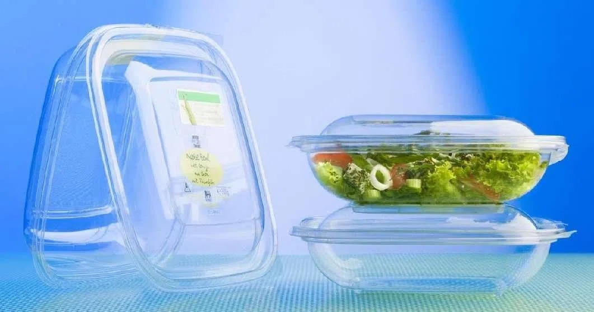

Idea: Due to its biocompatibility and degradability, PLA was initially used primarily in high-value medical applications.
Examples: Absorbable surgical sutures, bone screws, and tissue engineering scaffolds. In these applications, the material naturally degrades after fulfilling its function within the human body.

Idea: PLA entered the consumer goods market as an alternative to petroleum-based plastics.
Examples: Transparent cups and garbage bags. These are common areas in packaging that closely relate to graphic design.
Idea: PLA has found new applications in 3D printing and design innovation.
Examples: Customized prosthetics, architectural models, and consumer products. These applications leverage PLA's ease of use and environmental benefits.
Written by HTML, 2026
Experiment 1 Experiment 2 Experiment 3 Experiment 4 Experiment 5 Experiment 6